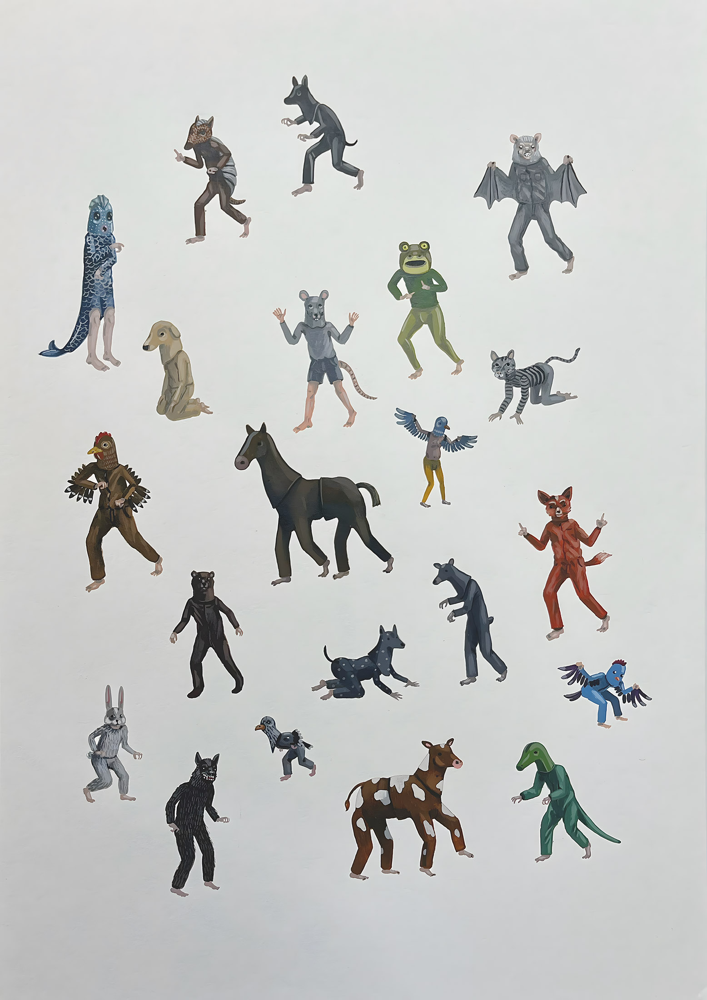
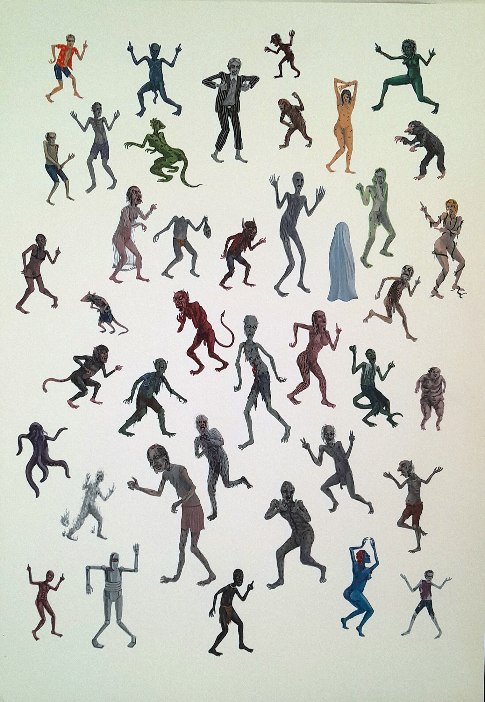
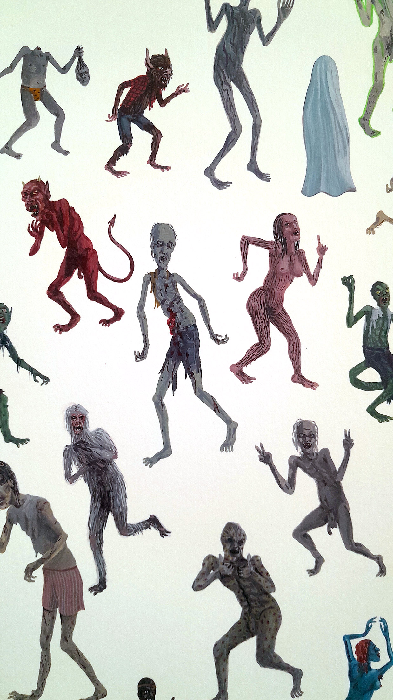
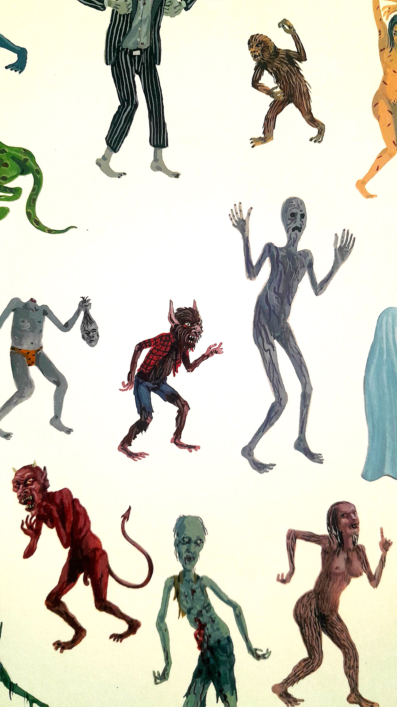
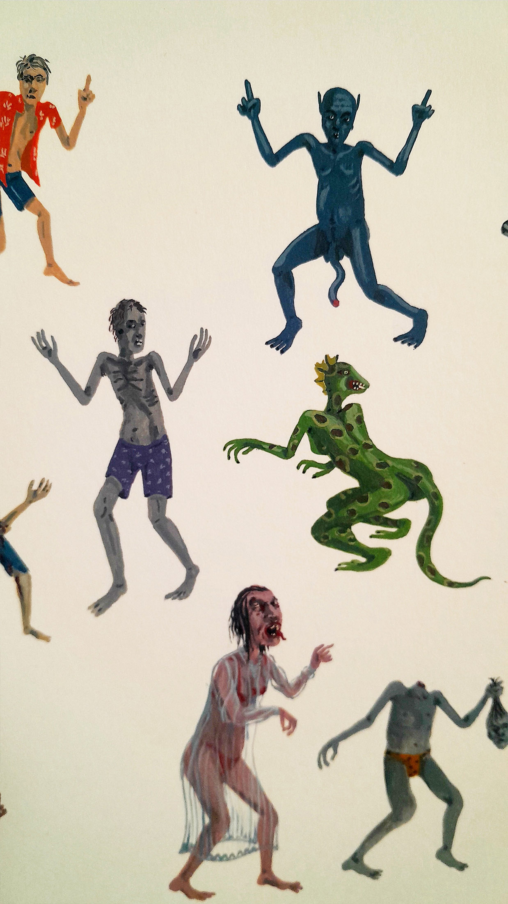

Retratos
Retratos reúne obras que toman el género como punto de partida para desplazarlo hacia una lógica de archivo: figuras organizadas en un mismo campo, tensiones entre lo individual y lo colectivo, y una lectura donde la acumulación funciona como estructura.




